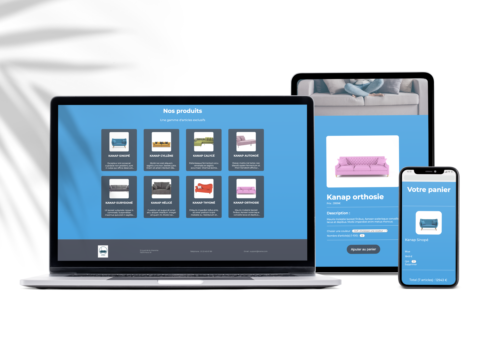

Kanap
Objectifs
・Unifier les travaux déjà réalisés par l’équipe en intégrant dynamiquement les éléments de l’API dans les différentes pages web avec JavaScript. ・Réaliser un test d'acceptation
Langages et technologies utilisés
Contexte
Kanap, une marque de canapés qui vend ses produits depuis sa boutique exclusivement. Aujourd’hui, celle-ci souhaiterait avoir une plateforme de e-commerce en plus de sa boutique physique pour vendre ses produits sur Internet.
Installation
・Il faut avoir Node et 'npm' d'installés localement sur l'ordinateur. ・Depuis le dossier "back" du projet, éxécuter "npm install". ・Démarrer le serveur avec "node server" ou "nodemon server" (pour que le serveur s'actualise automatiquement) ・Le serveur devrait être en marche sur "localhost" avec le port par défaut "3000" ・Si le serveur est en marche sur un autre serveur pour une raison quelconque, il est indiqué sur la console par exemple "Listening on port 3001"
Compétences évaluées
・Créer un plan de test pour une application ・Valider des données issues de sources externes ・Interagir avec un web service avec JavaScript ・Gérer des événements JavaScript
Architecture générale
L’application web est composée de 4 pages : ・Une page d’accueil montrant (de manière dynamique) tous les articles disponibles à la vente. ・Une page “produit” qui affiche (de manière dynamique) les détails du produit sur lequel l'utilisateur a cliqué depuis la page d’accueil. Depuis cette page, l’utilisateur peut sélectionner une quantité, une couleur, et ajouter le produit à son panier. ・Une page “panier”. Celle-ci contient plusieurs parties : - Un résumé des produits dans le panier, le prix total et la possibilité de modifier la quantité d’un produit sélectionné ou bien de supprimer celui-ci. - Un formulaire permettant de passer une commande. Les données du formulaire doivent être correctes et bien formatées avant d'être renvoyées au back-end. Par exemple, pas de chiffre dans un champ prénom. ・Une page “confirmation” : - Un message de confirmation de commande, remerciant l'utilisateur pour sa commande, et indiquant l'identifiant de commande envoyé par l’API.
Spécifications fonctionnelles
・ La page d’accueil : - Cette page présente l’ensemble des produits retournés par l’API. - Pour chaque produit, il faudra afficher l’image de celui-ci, ainsi que son nom et le début de sa description. - En cliquant sur le produit, l’utilisateur sera redirigé sur la page du produit pour consulter celui-ci plus en détail. ・La page produit : - Cette page présente un seul produit ; elle aura un menu déroulant permettant à l'utilisateur de choisir une option de personnalisation, ainsi qu’un input pour saisir la quantité. - Ces éléments doivent être pris en compte dans le panier. ・La page Panier : - Sur cette page, l’utilisateur va pouvoir modifier la quantité d’un produit de son panier ; à ce moment, le total du panier devra bien se mettre à jour. - L’utilisateur aura aussi la possibilité de supprimer un produit de son panier, le produit devra donc disparaître de la page. - Les inputs des utilisateurs doivent être analysés et validés pour vérifier le format et le type de données avant l’envoi à l’API. Il ne serait par exemple pas recevable d’accepter un prénom contenant des chiffres, ou une adresse e-mail ne contenant pas de symbole “@”. - En cas de problème de saisie, un message d’erreur devra être affiché en dessous du champ correspondant. ・La page Confirmation - Sur cette page, l'utilisateur doit voir s’afficher son numéro de commande. - Le numéro ne doit être stocké nulle part.
Spécifications techniques
・ Le code source : - Celui-ci devra être indenté et utiliser des commentaires en début de chaque fonction pour décrire son rôle. Il devra également être découpé en plusieurs fonctions réutilisables (nommées). - Une fonction doit être courte et répondre à un besoin précis. Il ne faudrait pas avoir de longues fonctions qui viendraient répondre à plusieurs besoins à la fois. Exemple : il ne serait pas accepté de mettre une seule et unique fonction en place pour collecter, traiter et envoyer des données. ・ API : - Concernant l’API, des promesses devront être utilisées pour éviter les callbacks. - Il est possible d’utiliser des solutions alternatives, comme fetch, celle-ci englobant la promesse. - L’API n’est actuellement que dans sa première version. La requête post qu’il faudra formuler pour passer une commande ne prend pas encore en considération la quantité ni la couleur des produits achetés.